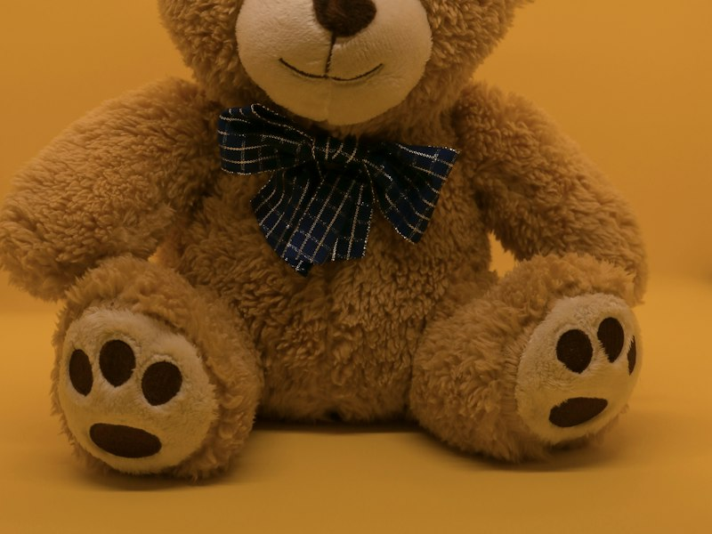
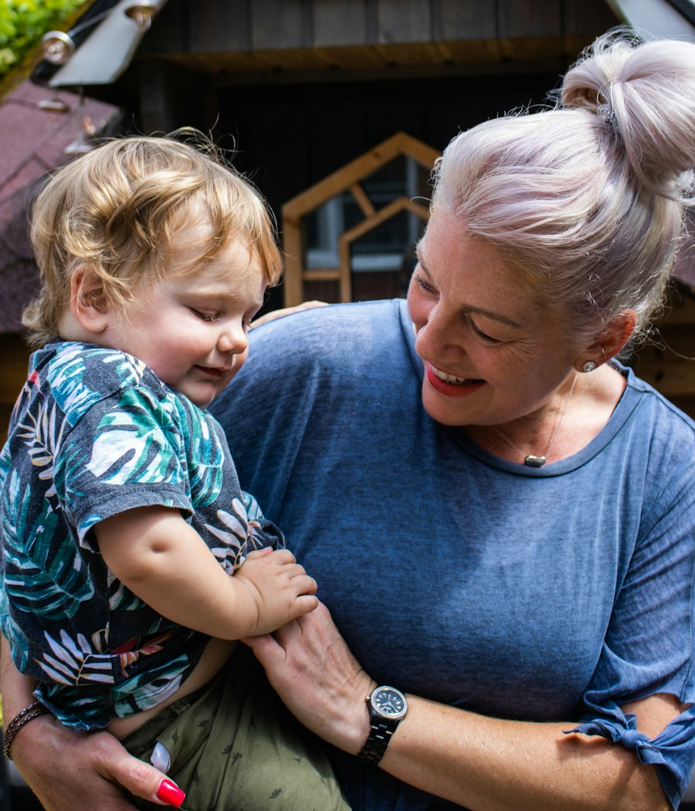
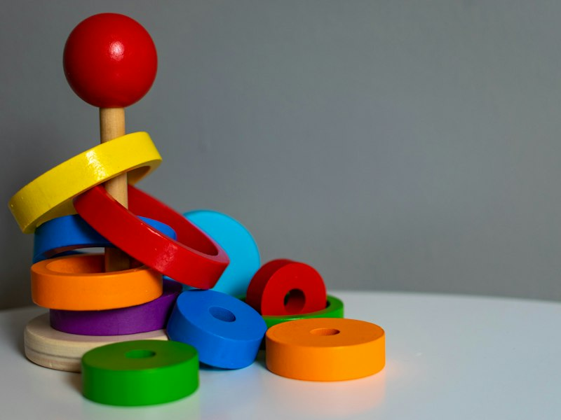

For modern parents
Little things, with a smaller footprint.
Thoughtfully made children's essentials — and the carbon footprint of each one shown up front, in plain numbers. So you can choose well without becoming a scientist.
- Life-cycle based estimates
- Sources shown for every score
- No greenwashing, just ranges

A
Low footprint
verified & sourced
5life-cycle stages, every score
1clear grade, A to E
0greenwashing — sources shown
30sto check before you buy
The gap
Labels tell you what's inside. Nothing tells you what it costs the planet.
"Eco", "green", and "natural" are everywhere — and mean almost nothing. A caring shopper is left guessing. We turn that guess into a number you can compare.
How it works
Three steps, no homework.
-
1
Search or scan
Browse the collection or look up any children's product by name or barcode.
-
2
We do the math
We estimate its footprint across its whole life: materials, making, shipping, packaging, disposal.
-
3
See it clearly
A simple grade, the kg of CO₂e, where it comes from — and a lower-impact swap.
The collection
Made for little ones.
Lighter on the planet.
A small, carefully chosen range of children's essentials — each with its carbon footprint shown right on the label.

Prices and footprint figures are illustrative placeholders.
Live demo
Pick a product. See its footprint.
Sample data for illustration — the real app uses live, sourced estimates.
Who it's for
Built for the people who read every label.
New parents
You're already careful about what touches your baby. Now you can be just as careful about the footprint it leaves behind.
Thoughtful gift-givers
Buying for someone else's little one? Give something lovely that's also kind to the planet they'll grow up on.
Conscious shoppers
Anyone tired of vague "eco" claims and ready for a number they can actually trust and compare.
Our method
How we calculate a footprint — honestly.
A footprint is an estimate, not a weather report. We're upfront about how we get there and where the uncertainty lives.
Materials
What it's made of and how much. Organic cotton, wood, bamboo and plastic each carry very different emissions.
Manufacturing
Energy used to turn raw material into a finished product, weighted by where it's made.
Transport
How far it travels to reach you, and by ship, truck, or air.
Packaging
The box, wrap and filler — counted, not ignored.
End of life
Whether it's recycled, composted, or sent to landfill.
We use recognised data
Estimates are built on published life-cycle assessment (LCA) databases and peer-reviewed emission factors — the same categories the ISO 14040 standard defines.
We show ranges, not false precision
When the data is fuzzy, we say so with a range and a confidence label instead of inventing a tidy number.
You can see our sources
Every score links to the assumptions and factors behind it. If we can't source it, we don't score it.
Be first to shop with a clear conscience.
Join the waitlist and we'll let you know the moment Little Footprints opens.